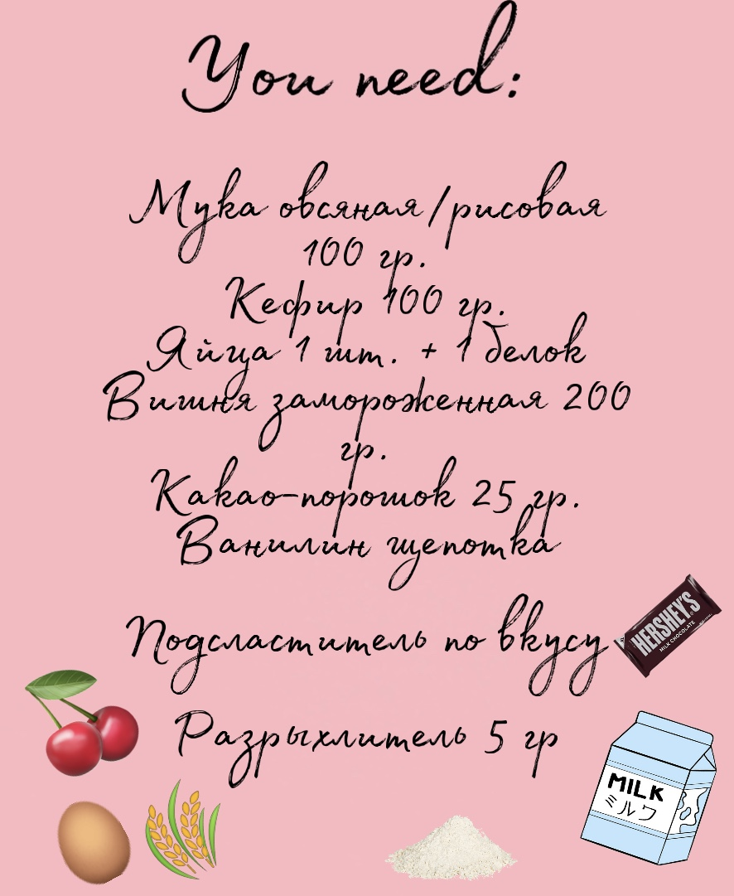
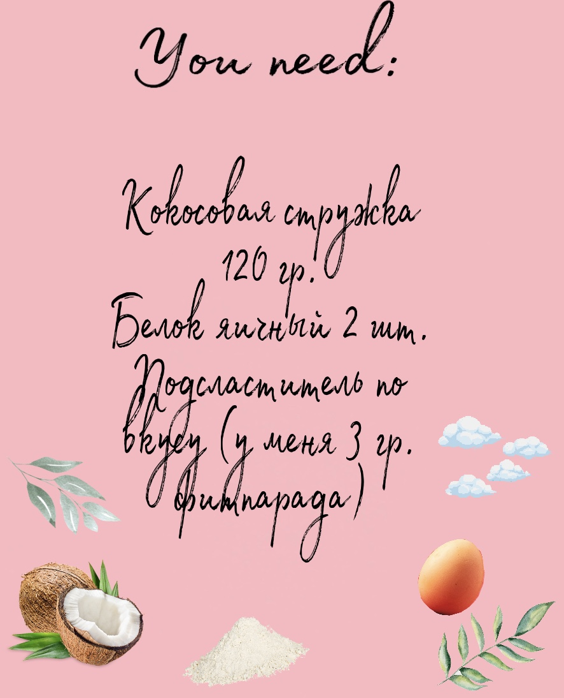

Сладости

Полезный Брауни
- Смешиваем все ингредиенты, кроме вишни, в относительно жидкое тесто без комочков. Выливаем в форму.
- Сверху складываем замороженную вишню. Отправляем в разогретую до 180 градусов духовку на 30 минут.
- Даем остыть 20 минут.
Кокосовые clouds
- Взбиваем белки до крепких пиков (до густоты).
- Добавляем подсластитель, кокосовую стружку.
- Всё перемешиваем. Формируем шарики.
- Выкладываем на противень на пергаментную бумагу или силиконовый коврик.
- Отправляем в разогретую до 180 градусов духовку на 20 минут.
